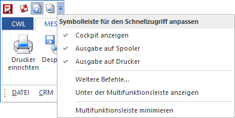
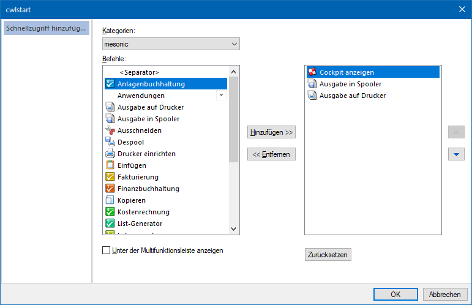
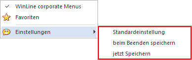

Mit Hilfe des Schnellzugriffs können wichtige Buttons in der Titelleiste der WinLine immer dargestellt werden. Die Administrierung dieses Bereichs erfolgt mit Hilfe des Icons , durch welches ein Kontextmenü angezeigt wird.

Ø Symbolleiste für den Schnellzugriff anpassen
Hier werden zugeordneten Buttons angezeigt. Durch Anwahl eines Eintrags wird dieser temporär deaktiviert.
Ø Weitere Befehle…
Nach Anwahl dieses Eintrags öffnet sich das Fenster "cwlstart". In diesem können Buttons / Funktionen aus unterschiedlichsten Ribbons dem Schnellzugriff hinzugefügt werden.

Hinweis
Bei folgenden Befehlen gibt es Einschränkungen zu beachten:
ü Makro Liste
Es können Makros
aufgerufen und abgespielt werden. Eine Neuanalge ist allerdings nicht
möglich.
ü Quick CRM
Der Befehl kann nur
genutzt werden, wenn der Ribbon CRM
aktiv ist.
Ø Unter der Multifunktionsleiste anzeigen / Über der Multifunktionsleiste anzeigen
Durch Anwahl dieses Eintrags wird der Schnellzugriff unter bzw. wieder über dem Ribbon dargestellt.
Ø Multifunktionsleiste minimieren
Mit Hilfe dieser Option wird der Ribbon eingeklappt.
Speicherung
Die Speicherung der Einstellungen des Schnellzugriffs erfolgt über die rechte Maustaste in der Titelleiste. Die Speicherung selber erfolgt dabei in der Windows Registry, d.h. ist unabhängig vom angemeldeten Benutzer.

Ø Standardeinstellung
Es werden die Standardeinstellungen geladen und individuelle Einstellungen verworfen (Neustart der WinLine notwendig).
Ø beim Beenden speichern
Es werden die Einstellung des Schnellzugriffs beim Beenden der WinLine gespeichert.
Ø jetzt Speichern
Es werden die aktuellen Einstellungen des Schnellzugriffs direkt gespeichert